Product & Interaction Designer · New York
Xueer Zhang
Hi, I'm Xueer. I design thoughtful digital and physical experiences, from AI-powered products to human-robot interaction.
M.S. Information Science
Cornell Tech, 2027
NetEase Cloud Music
Ant Group (Alipay) · Camel Games
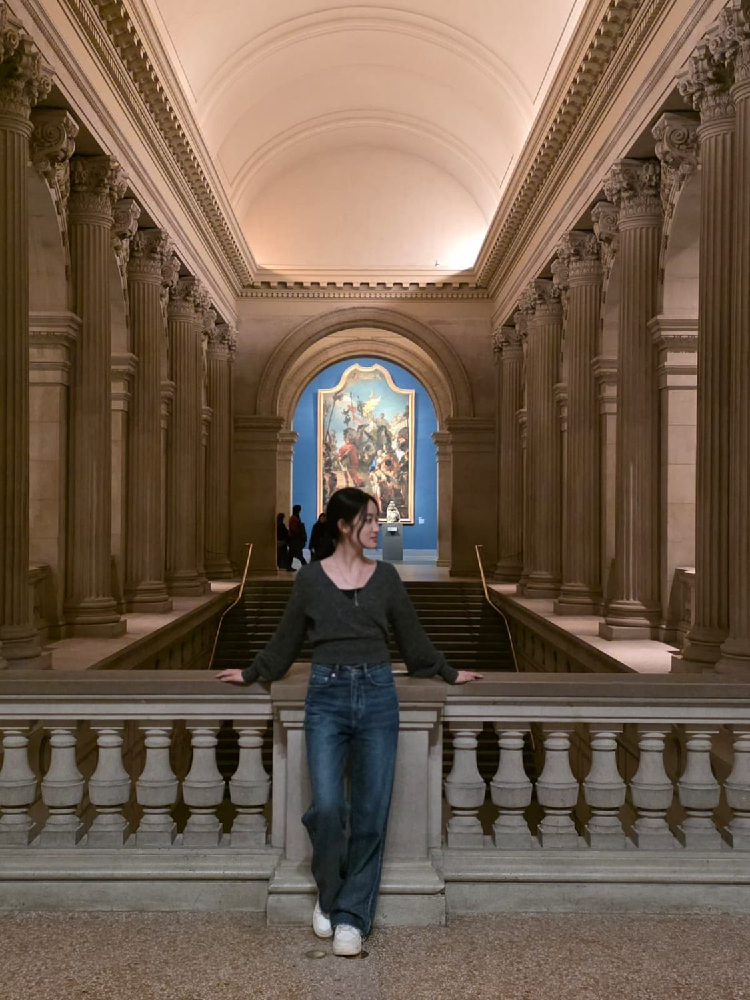
Selected Work(12)
Off the screen
Painting · Gardens · One hamsterBefore I designed interfaces, I painted. I still do, and most of what I make comes back to two things: classical Chinese gardens and a very fluffy golden hamster.
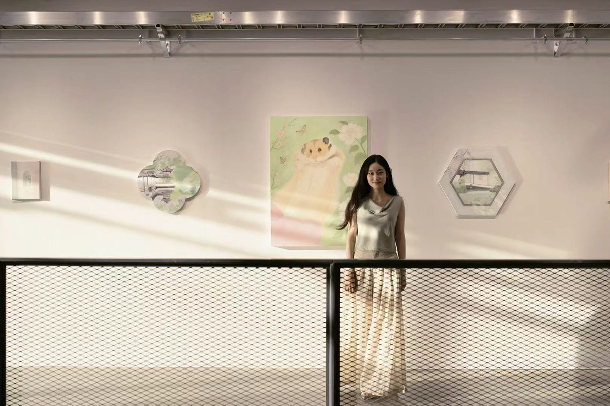
Exhibition
My painting exhibition
Soft greens and pinks, garden scenes and my hamster as the main character. Some canvases are cut into quatrefoil and hexagon shapes, borrowed from the lattice windows of Suzhou gardens.
Side project · Habitat design
A Suzhou garden for a hamster
I designed and built my golden hamster's home after the classical gardens of Suzhou: a whitewashed wall with black curved eaves, a lattice-window pavilion, a stone-edged pond and beds of dried roses and lavender.
He mostly uses it to sit on the roof and supervise.
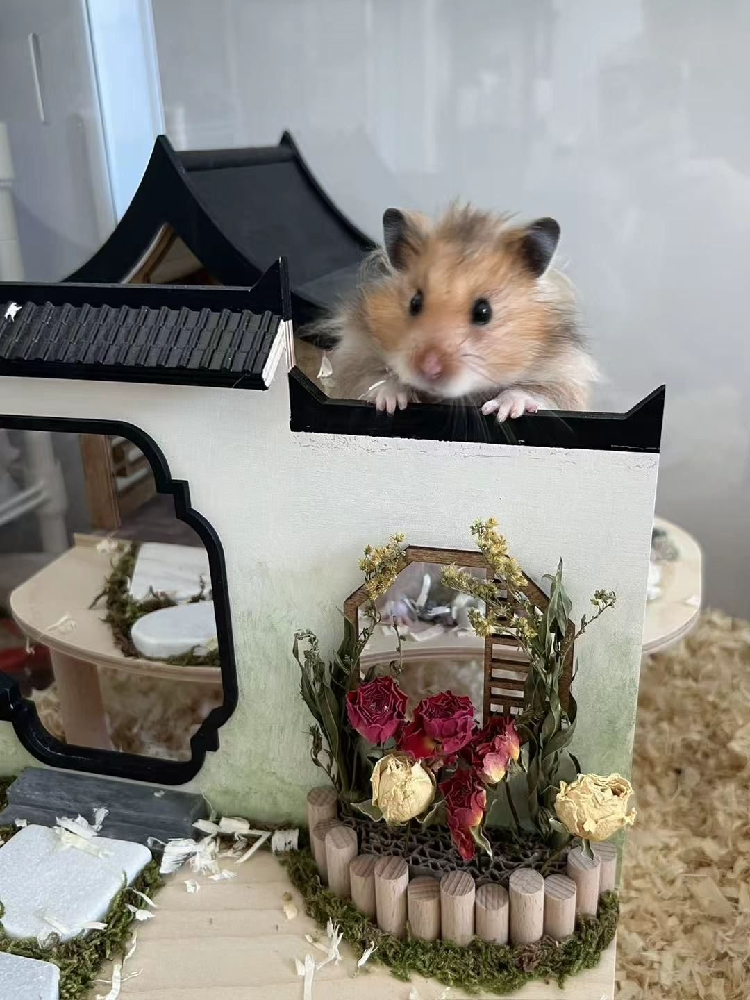
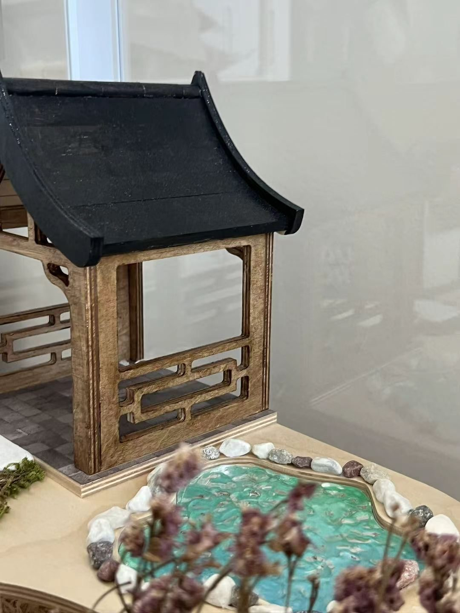
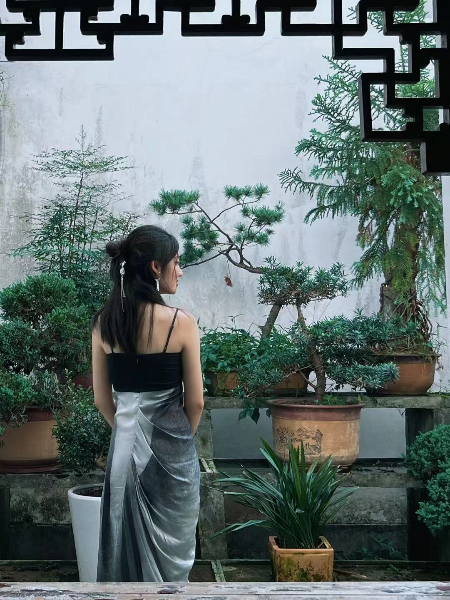
Paintings
Selected work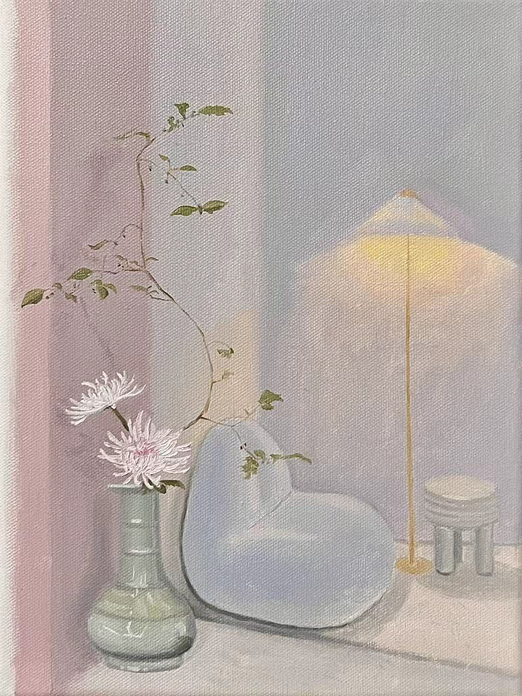
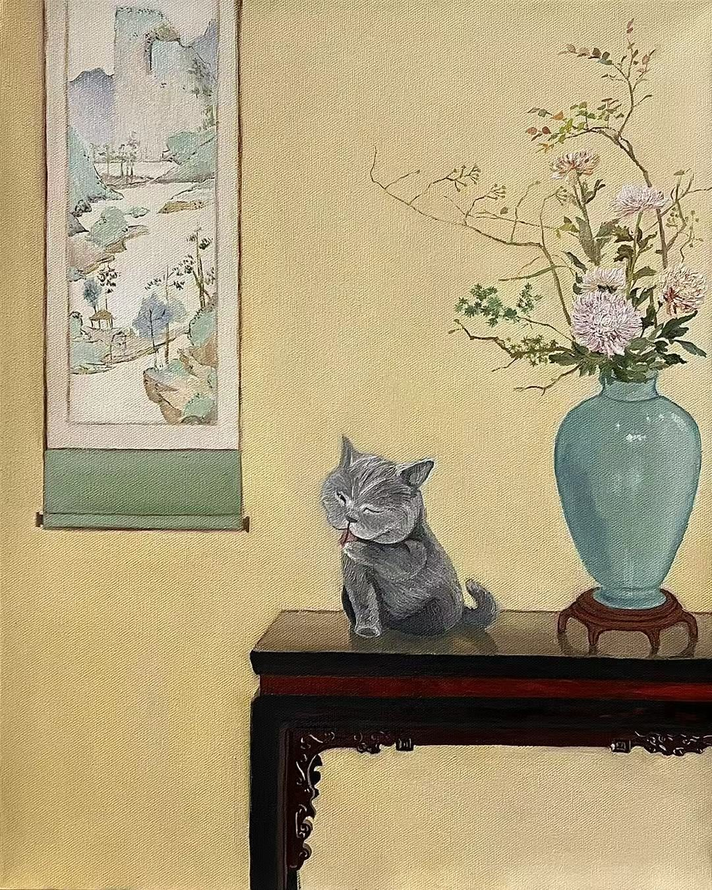
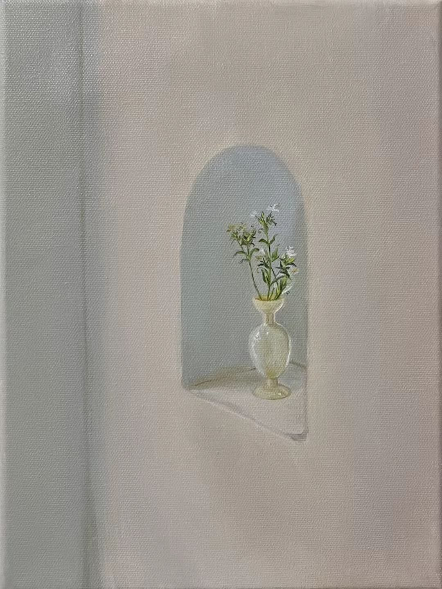
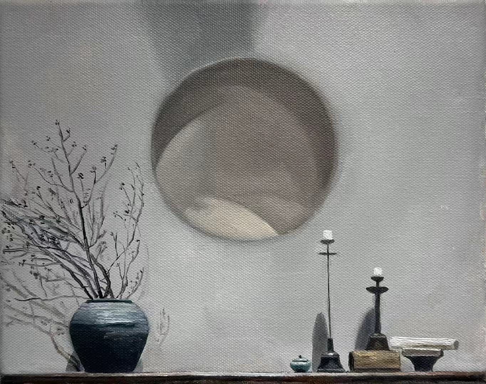
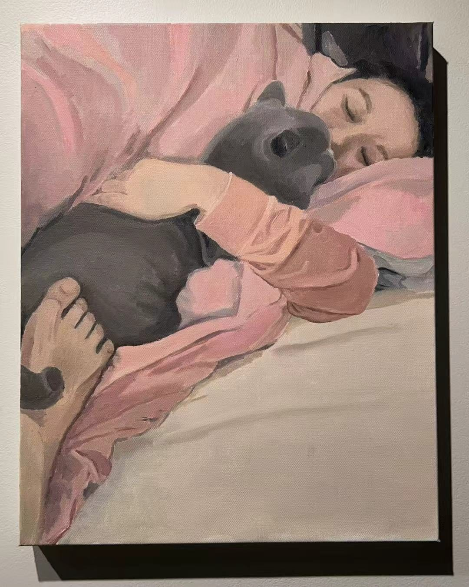
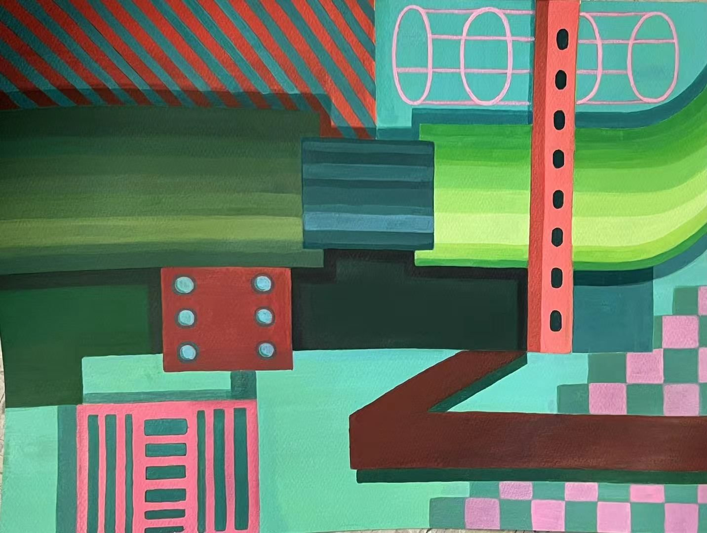
About
Art · Psychology · HCI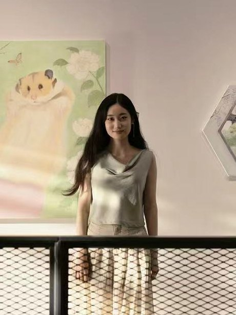
I studied art and psychology before HCI, so I tend to ask two questions about every screen: how does it feel, and why do people behave this way around it?
I'm currently pursuing an M.S. in Information Science at Cornell Tech, focused on human-computer interaction, user research and AI products. Before that I earned a B.A. in Art and Psychology, with a minor in Art History, from the University of Virginia.
This year I interned on NetEase Cloud Music's AI Search team and Ant Group's Alipay "Tap" NFC team. At school I build things that leave the screen: a quiz-game robot for K-12 classrooms and a coin-operated box that tells you what to do next.
Design & Prototyping
- Figma
- Illustrator, Photoshop, InDesign
- After Effects, Premiere Pro
- Blender
Research
- User interviews
- Usability & task-based testing
- Competitive benchmarking
- Journey & stakeholder mapping
Build
- HTML / CSS / JavaScript
- Python
- Arduino, Raspberry Pi
- ROS2
Languages
- English (TOEFL 112)
- Mandarin
- Korean
Experience & Education
- May – Jun 2026Product InternAnt Group · Alipay "Tap" NFC PaymentMarket research across 1,000+ scenarios, competitor benchmarking, Tap-to-Service concept and prototype
- Apr – Jun 2026Interaction Design InternNetEase Cloud Music · AI SearchUser interviews, information architecture, UI and conversational flows for AI search results
- Jun – Jul 2023UX Design InternCamel GamesStrategy-game UI analysis, 15+ design comps, onboarding usability tests
- 2025 – 2027M.S. Information ScienceCornell University · Cornell TechHCI, UX/UI Design, User Research, Applied ML, Interaction Design · GPA 3.8
- 2021 – 2025B.A. Art & PsychologyUniversity of Virginia · Minor in Art HistoryCognitive & Social Psychology, Data Analysis in R, Programming · GPA 3.74